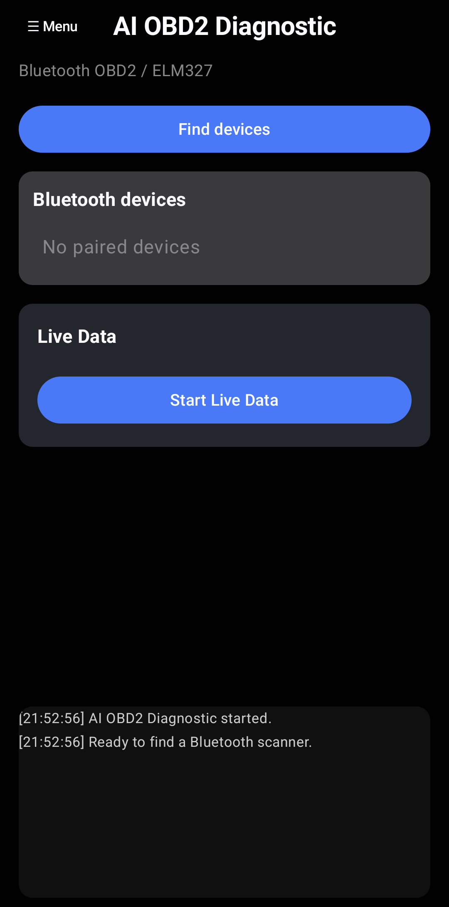
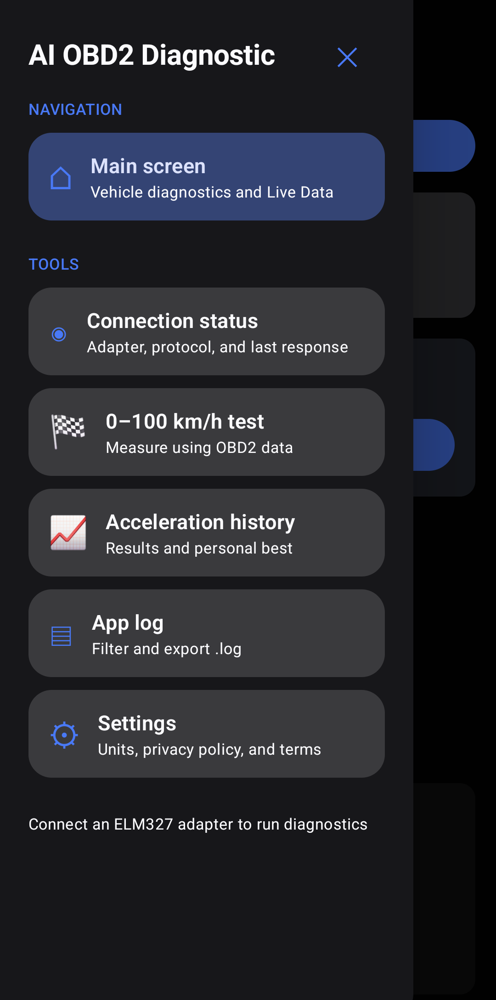
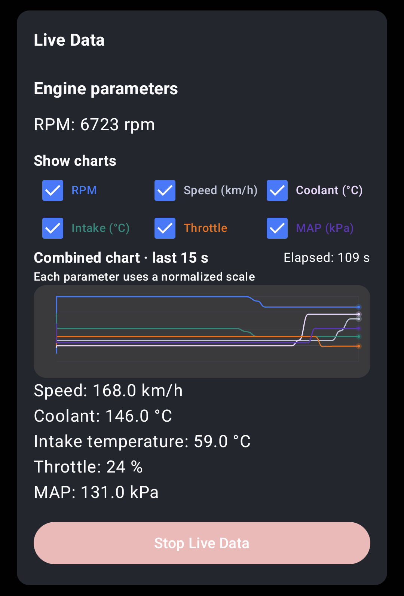
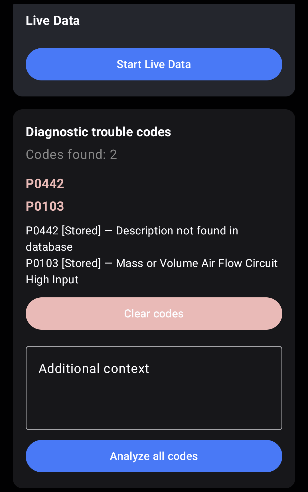
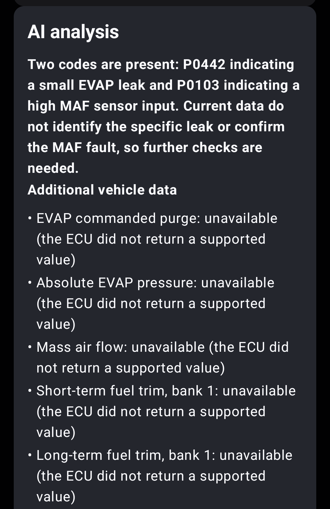
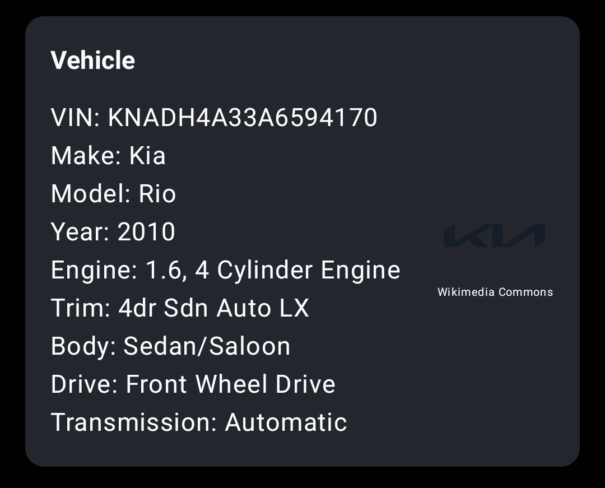
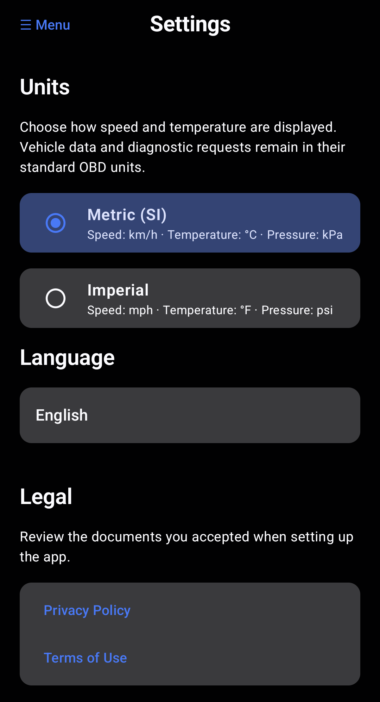
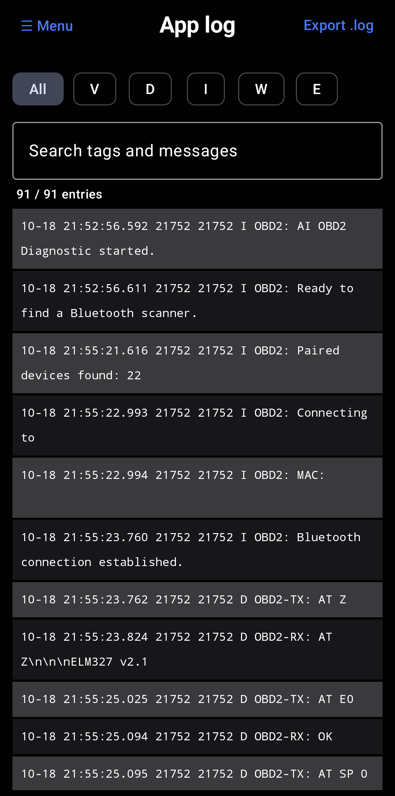

OBD2 connection
Find paired Bluetooth adapters and read supported vehicle data through ELM327-compatible hardware.
Read trouble codes, follow live OBD2 data, and get AI-assisted explanations in one practical Android app.
Requires an Android phone and a compatible Bluetooth OBD2 adapter. Adapter sold separately.
Connect a Bluetooth adapter to explore the diagnostic data your vehicle makes available.
Find paired Bluetooth adapters and read supported vehicle data through ELM327-compatible hardware.
Review diagnostic trouble codes and request AI-assisted explanations to help plan your next checks.
Monitor available parameters with selectable and combined charts while the ECU is being polled.
Measure 0-100 km/h or 0-60 mph and review saved runs.
Choose metric or imperial display units in Settings.
Use the app in English, Polish, Russian, Ukrainian, German, Spanish, or French.
Explore the main features through real screens from the app.
Find a paired adapter, open Live Data, and reach the main diagnostic tools from the app's home screen.

Open connection status, acceleration timing, saved runs, the app log, and settings without crowding the main screen.

Follow supported values such as engine speed, vehicle speed, coolant temperature, throttle position, and intake pressure. Choose which traces to show and compare them together on a compact chart.

Values shown are for illustration only and do not represent actual vehicle data.
Review stored diagnostic trouble codes and their descriptions, then request an explanation to help decide what to check next.

The analysis separates reported measurements from values the vehicle did not provide, so missing data is clearly identified.

Use VIN-based lookup to display available make, model, year, and other vehicle information in the app.

Switch between metric and imperial units, select a supported language, and open the privacy policy and terms from one place.

Filter the app's technical log by severity or search its entries, then export a .log file when troubleshooting is needed.

Connect a compatible Bluetooth OBD2 adapter to your vehicle and pair it with your Android phone.
Check available trouble codes, identify your vehicle, or view Live Data from the ECU.
Use AI assistance when useful and confirm important findings with proper diagnostic methods.
Download the current debug build. Android may ask you to allow installation from your browser or file manager.